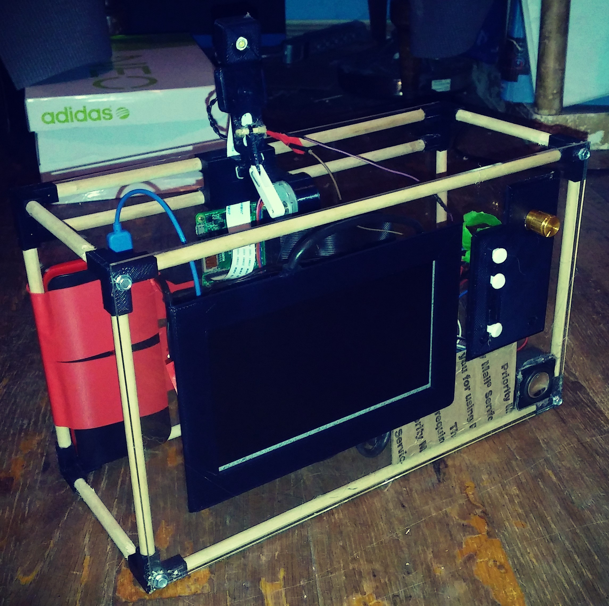

This is in independent final project that I did as part of the MOSTEC Electrical Engineering & Computer Science course. The goal of the assignment was to incorporate skills learned in the course into one cohesive project. I decided to make a portable photobooth mainly because I was excited to build a project around the new Raspi Camera module.
The course was geared towards students who had little to know experience in coding python so a lot of the material went over basic functions and scoping. The hardware/EE component of the course walked us through building different types of circuits. I was most excited about the audio amplifier circuit we built from scratch so I decided to include that in conjunction with python’s text-to-speech functionality to improve the user interface of the project.
Working on the user interface for the project was definitely challenging considering I barely knew how to code at the time. With the help of a few libraries I was able to make something functional.
Working on the user interface for the project was definitely challenging considering I barely knew how to code at the time. With the help of a few libraries I was able to make something functional.
Once I confirmed everything worked I cleaned it up and put everything in a housing so that could be a little more “portable”.
{kind=link}
{kind=link}
{kind=link}